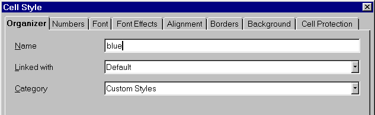
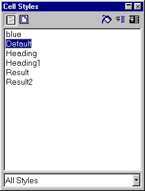
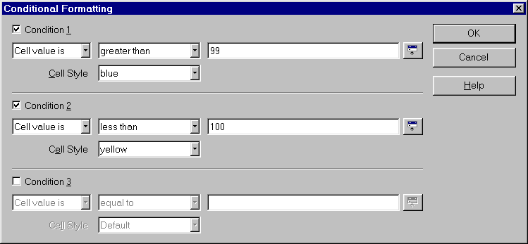

Table
of Contents
You are a bookseller and sell books every day. You'd like to highlight, in color, the number of books sold during a week with the result displayed in yellow if less than 100 and in blue if 100 or more were sold.
To do so, you have to create 2 new styles for each color and 2 formatting conditions: one for numbers less than 100 and another for those numbers greater than or equal to 100.
Let's do it!
To create a new Style, open the Stylist:
In the Stylist window, there are several styles ready to use. You'll use the Default style as a base to create your own:

The dialog window that will appear has several tabs as in the diagram
below:
in the Organizer tab, type a name for your style; here it is simply called 'blue',
now switch to the Background tab and choose a blue color in the color palette,
In the Stylist, your new style will be displayed with the name you gave it. Repeat the steps above to create the style 'yellow'.

Note: You have created a background style, but of course you may apply
other features to that style. By clicking on the other tabs, you may access
many other functions, such as, apply a border, change font, alignment, etc.
You have typed your figures, inserted your formulas in the cells, and now you wish to add some colors!
In our example, the colors are to be displayed in cell [B9]

Look at the result: type in '122' in cell [B9] and the color changes!
Author: Sophie Gautier
Thanks to: Richard Holt, great proof reader and OOo contributor
Intgr by: Gianluca Turconi
Last modified: January 28, 2002
Contacts: OpenOffice.org Documentation Project http://documentation.openoffice.org/index.html
Translation: Gianluca Turconi